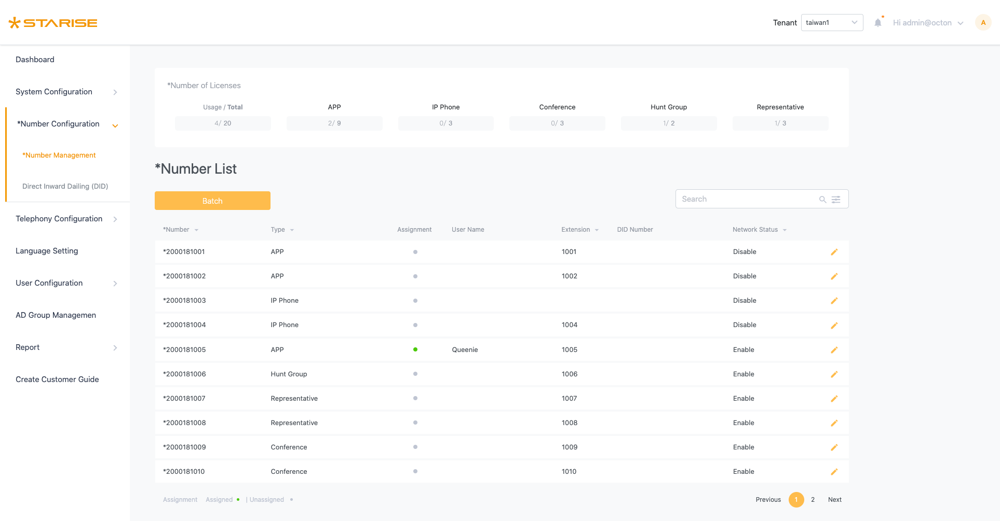
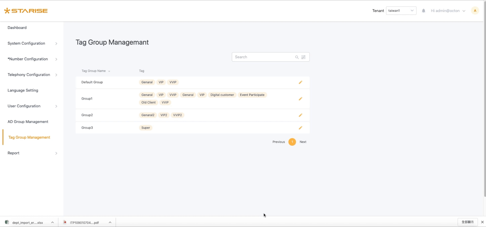
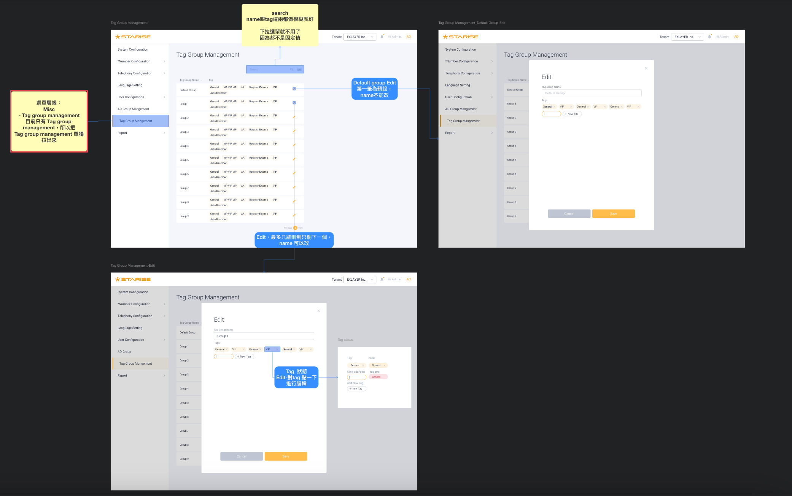
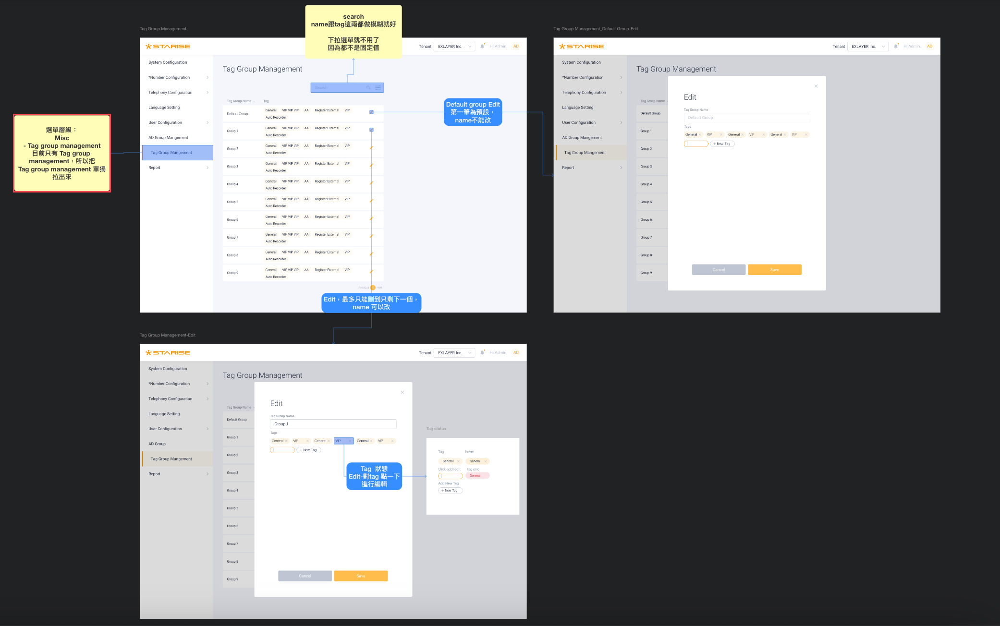

STARISE B2B communication system
STARISE enhances remote teamwork, office efficiency, and customizes communication within the enterprise community's secure information environment.
My Role
Senior UI/UX designer.
- Collaborating with diverse stakeholders, product managers, and engineers to identify issues and offer solutions.
- Creating an end-to-end UX/UI design process, solutions and executing them.
- Delivering use cases, wireframes, high-fidelity interactive prototypes, specifications, and annotations for both on-site and remote development teams.
- Collaborating with front-end colleagues on HTML & CSS (SCSS), while utilizing Bootstrap resources, to define CSS components.
- Determining information architecture and implementing responsive design.
The Problem
Users are facing the following issues when using the product:
- Vast and Complex Data: Users encounter difficulties locating required information, leading to time wastage and inefficiency as they spend significant time searching and filtering data in the backend.
- Non-Modern UI Interaction Patterns: The current flow doesn't follow modern UI standards, confusing users during system use and extending their adaptation period.
- Excessive Backend Operation Time: Complex data and an inconvenient workflow force users to spend excessive time managing switch system tasks in the backend, limiting their availability for other critical work.
Overall, our goal is to offer a streamlined UI and a solution that minimizes user operation time, thereby boosting work efficiency.
The Key Design
Improving the convenience of system functionality.

- 


Import data
Due to the significant amount of switch data, the import feature enables Excel data input, addressing issues related to managing extensive data and single-record input.
Tag group
Easily establish different groupings using tags for categorization.
Recording function
The customized B-to-B telephone recording function enables the management of critical call history records.
Responsive
Previously available only on computer versions without support for other devices, tablet devices are now also supported.
Impacts
After the UI adjustments, the satisfaction of the internal customer service department improved. The introduction of the Element UI plugin reduced development time for the development team.
80%
User satisfaction20%
Reducing development time
Process
Find user pain points
To gain a deeper understanding of users, their motivations, and pain points, I conducted internal QA interviews and surveys.Therefore, the QA department, which has been using our switches for a long time, was selected as an early adopter.
The major pain points we found were :
- The visuals need to be enhanced to be more aesthetically pleasing and user-friendly, resulting in clearer and more intuitive operation. Operation requires a user manual, adaptation time, and is often not very intuitive.
Sketch - Design iteration
Discuss with the product manager the primary need for iterative functions, sketch the idea on the whiteboard, confirm with the product manager, and consult with the front-end and back-end engineers for feasibility.

UI Flow
While redesigning the UI flow, our goal is to reduce the number of user steps and save operational time for the functions. We will delve into components in more detail, covering how to trigger them, follow-up behaviors, special conditions, and error warnings.
 

After sketching the draft, use Overflow to extract the flowchart steps and write the functional descriptions.
UI Guideline
Sometimes, a component may need to be presented with different functions and styles to meet various situational requirements. This includes considering different screen sizes and referring to the UI guidelines.


Use different styles according to different situations.

Utilize Bootstrap to aid in configuring CSS & SCSS settings.
Takeaways
Feedback from internal colleagues and clients helps us validate designs and address existing issues through experimentation.
Here is what I have learned from different roles :
- Discussing with product managers: Understanding the intricacies and relationships in creating backend functionalities.
- Conversations with engineers: Practical implementation of features, identifying process blind spots,this has greatly assisted me.
- Engaging with QA: Brainstorming optimization of features and data presentation within existing user behaviors, facilitating easy access to required functions.